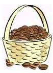
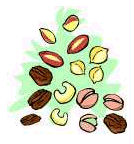

|  |
One week, she bought one pound of cashews and two pounds of pecans, and paid $2.40. The next week she bought four pounds of almonds and one pound of cashews, paying $3.60. A week later she bought three pounds of walnuts, one pound of cashews and one pound of almonds for $2.10.
How much would she have to pay on her next trip to the grocery store, if she bought one pound of each of the four types of nuts?
Shanell's favorite hobby is baking cakes and cookies to serve her friends and family during holiday occasions. She often buys cashews, pecans, almonds, and walnuts to use in her recipes.
NOTE: Before writing out your answer, please check our Guide
lines for Writing POW Answers.
| Comments? Send e-mail. | Back to top | Go back to Home Page | Go back to Contents |